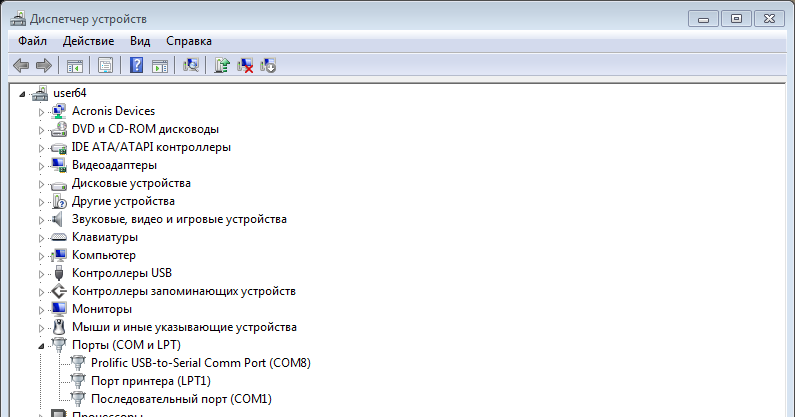
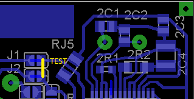
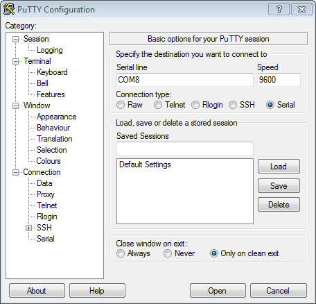
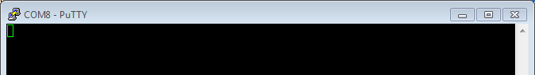
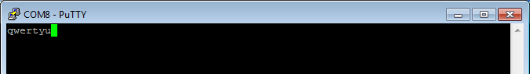
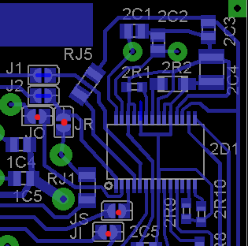

Список файлов
| adapters/ | адаптеры |
| export/ | экспортированные платы и схемы из eagle в png и из них в pdf |
| fw/ | |
| fw/avrdude.conf | изменённый конфиг avrdude |
| fw/avrdude.exe | заодно и сам avrdude |
| fw/com.txt | список комманд avrdude для прошивки |
| fw/EBN2HEX.exe | конвертер .ebn в intel .hex |
| fw/fw_md5.txt | список версий прошивок |
| fw/STK500.ebn | прошивка STK500 |
| fw/STK500.hex | конвертированная прошивка STK500 |
| fw/STK500.exe | |
| fw/STK500.pdf | схема оригинального STK500, без последней страници с чертежом платы |
| полный файл: STK500_Schematics.pdf 307кб MD5: 0A88D07B66FA626C891EF88E20FAB595 на 10 странице расположение элементов на плате | |
| gerber/ | папка с экспортированными чертежами плат из eagle под производство, из них создаётся файл SL6, который удобнее для печати на принтере |
| sprint/ | исходники на autoit для кнопки ускоряющей импорт gerber в SL6 |
| DESCRIPTION, eagle.epf | описание и параметры проекта eagle |
| HWProgUSB.sch | схема в eagle |
| HWProgUSB.brd | плата в eagle |
| ExportGerber.cam | задание eagle для экспорта gerber |
| DesignRules.dru | правила проектирования eagle, мой вариант |
| HWProgUSB.lbr | библиотека в eagle на основе схемы |
| HWProgUSB.lay6 | плата в SL6 из gerber |
| GerberAImport4SL6(x86).exe | добавляет кнопку в импорт SL6 для ускорения |
| GerberAImport4SL6(x64).exe | версия для x64, отличий от x86 нет |
| GerberAImport4SL6.ini | настройки импорта. При удалении создаётся, возможно потребуется изменить |
| packHWProgPro7z.bat | упаковка всего проекта в архив с исключением промежуточных файлов по packHWProgPro7z.txt. Архив создаётся в папке backup/ |
Проверка USB UART
Устройство определяется как Prolific USB-to-Serial Comm Port (COM8)
Для проверки перемкнуть J1 J2
Запустить PuTTY, указать COM порт, открыть порт ("Open")
Появится консоль PuTTY
Пока установлена перемычка, весь набранный текст будет появлятся в окне
Первая прошивка
Установить перемычки JR, JO, JS, JI
Модифицированный avrdude.conf
programmer
id = "pl2303";
desc = "pl2303 serial, reset=!txd sck=!rts mosi=!dtr miso=!cts";
type = "serbb";
connection_type = serial;
reset = ~3;
sck = ~7;
mosi = ~4;
miso = ~8;
;
В моём случае попался AT90S8535, маркированный как ATMEGA8535 16AU
получил сигнатуру (0x1e9303):
avrdude -p 8535 -P com8 -c pl2303 -B 4800 -i 500 -F
прошил:
avrdude -p 8535 -P com8 -c pl2303 -B 4800 -i 400 -U flash:w:"STK500.hex":a
прошивка таким способом заняла 26мин